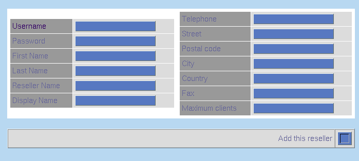

| Adding a Reseller | |||||||
| To add a reseller, you must be an ISPMan administrator. | |||||||
| Each reseller can create clients and fully manage their clients domains. | |||||||
| To add a reseller:
 Reseller Login Information
| ISPMan URL Usually ispman.domain.com (depending on your
setup, they may need to click "Login as Administrator")
| username Whatever you set above.
| password Whatever you set above.
| Remind the user to login as a Reseller
|
Return to Administrators
Guide
| Return to Main Help Screen
| |